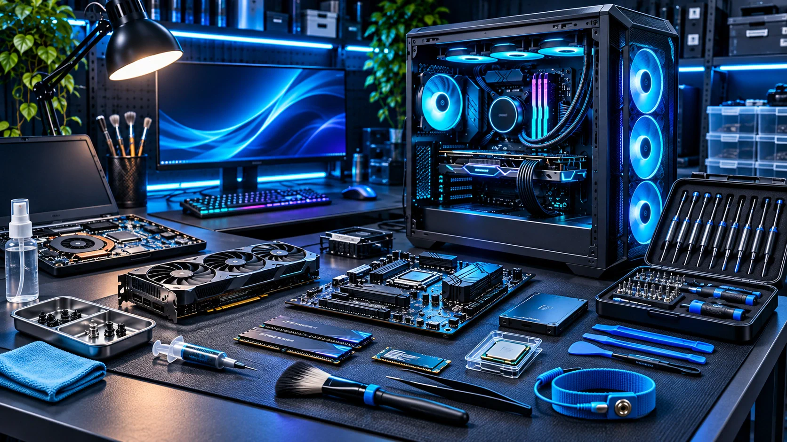

Как ускорить старый компьютер: 5 шагов до результата
SSD, память, чистка системы и обслуживание охлаждения — план ускорения без покупки нового ПК.
Читать статью →
Поддержка Windows 10 завершилась в октябре 2025 года, и вопрос «10 или 11» для большинства пользователей фактически закрыт: новая система — единственный вариант с обновлениями безопасности. Но нюансы всё же есть — разберём их честно.
Если процессор не проходит официальные требования (нет TPM 2.0, старое поколение CPU) или используется специфический старый софт и оборудование, Windows 10 остаётся вынужденным выбором. Но помните: без обновлений система постепенно становится уязвимой, а совместимость с новыми программами и играми снижается с каждым годом.
Windows 7 в 2026 году — только для изолированных рабочих станков, старых принтеров и специфического оборудования без выхода в интернет. Для домашних ПК она небезопасна: браузеры и современный софт её давно не поддерживают, а «дыры» не закрываются годами.
На современном железе разница в скорости минимальна: в одних задачах чуть быстрее 11, в других — 10. Главный аргумент не в FPS, а в безопасности и совместимости: новые программы и драйверы выходят уже преимущественно под Windows 11.
Для домашнего и рабочего компьютера в 2026 году оптимум — Windows 11 с чистой установкой, актуальными драйверами и переносом данных. Если железо не тянет одиннадцать — это повод задуматься об апгрейде: SSD и пара гигабайт памяти часто решают вопрос совместимости и скорости разом.
Нужна установка или переход с сохранением данных? Загляните на страницу установки Windows в Орске — подскажу оптимальную версию под вашу технику.

SSD, память, чистка системы и обслуживание охлаждения — план ускорения без покупки нового ПК.
Читать статью →
Процессоры, видеокарты, память и накопители для игр в Full HD, 2K и 4K — что актуально сейчас.
Читать статью →
Инструмент, порядок разборки, чего нельзя делать и когда пора доверить чистку мастеру.
Читать статью →Опишите задачу — перезвоню и проконсультирую бесплатно